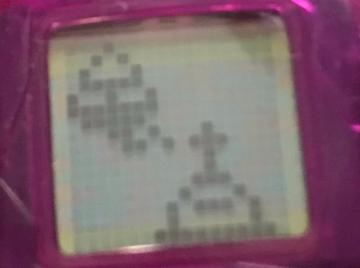

Bichinho virtual
Não é Tamagochi, é bichinho virtual. Ele foi um dos brinquedos mais marcantes da minha infância (alô galera dos anos 90/2000!) – e olha que eu nunca fui fissurada em joguinhos. Exatamente porque, pra mim, ele não era um jogo, e sim o meu bichinho -. Acordava feliz pra alimentar e cuidar bem do meu queridinho, se eu o deixasse muito tempo sozinho ele poderia morrer! O fato é que eu tava saudosa com toda essa experiência depois de descobrir que tinham relançado esse brinquedo recentemente e fiquei espantada pela pouca adesão das crianças.
Por que ele não parece interessante para as crianças de hoje?
Só quem não fazia ideia de que era possível ter uma realidade paralela ficou impressionado com o bichinho virtual. Um que coubesse na palma da mão, que não faria sujeira ou barulho e que os pais não iriam reclamar por querermos levar pra casa. E ainda por cima tinha preço popular! (os piratas). Isso era o mais próximo de um amigo imaginário, estranhamente materializado em sua versão pet pixelada. Esse gráfico simples e bem esquisito marcou uma época em que grandes passos estavam sendo dados no campo da tecnologia. E quem tinha um bichinho virtual, com certeza entendia o mood.
Os cuidados não podiam ser compartilhados, nem transferidos
Por outro lado, ele seria um dos primeiros protótipos a revelarem a individualidade do digital. Cuidar de um bichinho virtual não era sobre estar na rede através de uma interação on-line. Não. Cuidar do bichinho virtual era solitário. É claro que várias crianças também tinham e era possível conversar sobre o seu bichinho, afinal, além de ser uma novidade, cada um tinha o seu tipo preferido (o meu era o pinguim). Entretanto, por ser um brinquedo com inputs extremamente simples, não tinha muito o que trocar ideia, além do desabafo sofrido de que seu bichinho tinha falecido. Na real, o bichinho virtual inspirava nosso senso de responsabilidade por gerar afeição em relação àquela imagem esquisita – mas fofa. Pra mim, olhando pra trás, foi uma revolução ser capaz de ter sentimentos por algo digital. Isso é especificamente interessante se pensarmos em como, anos depois, conseguimos extrapolar essas ideias sobre sentimentos por personagens de jogos e animações diversas, “conversar” com IAs em vários contextos emocionais e sermos capazes de nos sentirmos queridos por elas… O bichinho virtual foi como um pequeno brotinho dessas interações cada vez mais complexas.
O tempo e o que ele tem a ver com o bichinho virtual
Apesar de sua natureza tecnológica, o bichinho virtual é considerado um dinossauro comparado aos jogos atuais. Os desavisados, saudosistas ou traíras usam o “Pou”, versão recente em app da mesma ideia. Mas por quê o nosso bichinho virtual dos anos 90 seria ultrapassado? A simplicidade da sua aparência e dos seus comandos poderiam ser uma resposta. Outra resposta possível seria uma derivação dessa suposição: o tempo. A maneira com que experienciamos o tempo com esse dispositivo era diferente; a proposta da interface era que ele fosse sincronizado à realidade temporal do usuário. Isso já traria um estranhamento para as crianças de hoje, acostumadas com duas ou mais telas ao mesmo tempo, a rapidez de comandos e as consequências imediatas de ações em jogo. No bichinho virtual, a configuração do relógio para o tempo do usuário era de suma importância, pois todas as suas funções eram baseadas nisso.
Podíamos escolher o tipo de bichinho que queríamos, não era imediata a sua vinda. Para tê-lo, era preciso primeiro assistir o vídeo de seu nascimento antes de começar a interagir, ou seja, entender que ali uma “vida” foi gerada. As atividades do bichinho eram de fácil compreensão por serem parte do cotidiano dos animais: comer, beber, dormir, tomar banho, brincar, receber carinho. E, estudar. Confesso que eu não entendia muito bem essa função pensando em um animal, pois os estudos consistiam em ler um livro, mas imagino que por ser destinado a humanos, o bichinho virtual já demonstrava que não era um pet comum, dado a sua natureza digital. Essas tarefas, à sua maneira, demandavam um certo tempo diário, assim como também precisamos de tempo para essas atividades. E quanto mais novo ele era, mais cuidados necessitava, ou seja, mais tempo e paciência.
O que mais esclarece que o bichinho virtual e suas necessidades remetiam ao tempo humano biológico era o seu sono. Ele dormia quando escurecia e não poderia ser incomodado em seu descanso, pois não respondia. Tínhamos de esperar que ele acordasse no dia seguinte. Independente do nível de complexidade das tarefas do brinquedo, essa é uma característica que hoje em dia já varreria boa parte das crianças modernas, com seu interesse imediatista e cada vez mais ávido por surpresas e recompensas. O bichinho virtual nunca foi muito estimulante. Pelo contrário, de uma forma banal, ele simulava o tempo humano em sua vida cotidiana. E daí, você poderia pensar: “mas é lógico que ele desliga em algum momento, foi feito para crianças”. Porém, isso não é óbvio, nada desliga definitivamente. Se olharmos sob a perspectiva do tecnológico, é difícil encontrar dispositivos que parem de responder atualmente, mesmo tendo a faixa etária livre – principalmente quando falamos de jogos.
Realmente, o bichinho virtual é para crianças dos anos 90
Acho que um espectro maior de emoções era o que fazia falta para mim no bichinho: nojo, tédio, medo… Felicidade era um de seus únicos estados, medido através do tamanho do sorriso. Apitava quando queria algo ou negava se não precisava. E, claro, os coraçõezinhos s2. Hoje, refletindo sobre o quanto esse é um dos temas mais importantes no universo das IAs, percebo o apelo. Mas lá, quando tinha meu bichinho, nada faltava. A velocidade, as cores, a ininterrupção e a infinidade de estímulos vieram depois. Ainda bem, tenho sorte de ter vivido essa evolução desde o começo, pois entendo que nem sempre foi assim. No fim, o tempo ainda é preponderante em todo caso. Mas que eu sinto falta do tempo do meu bichinho, eu sinto.